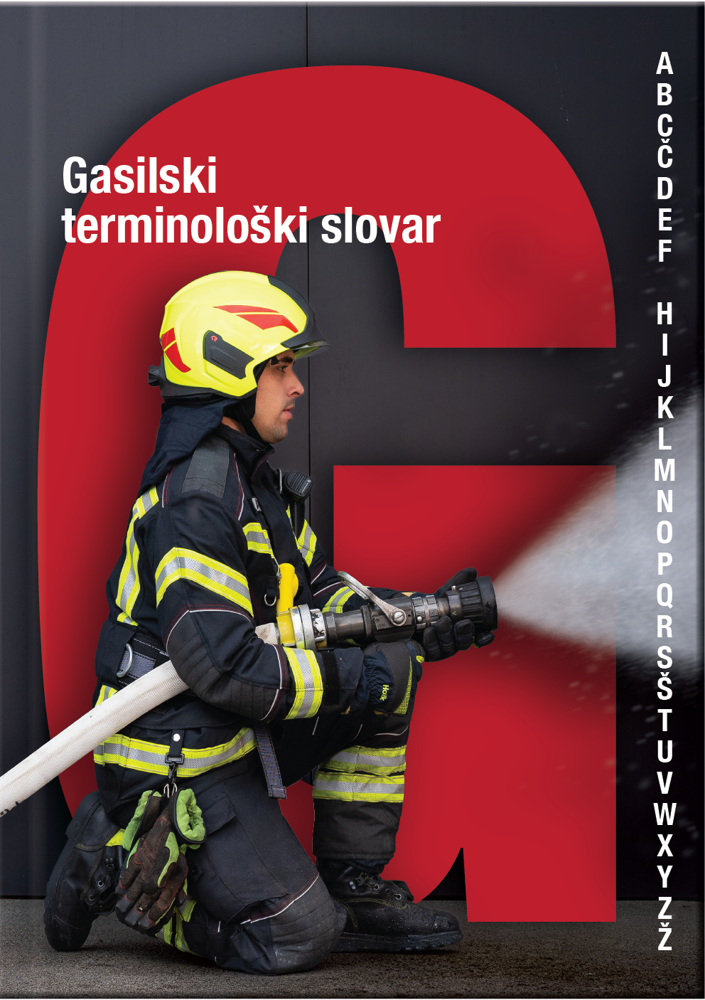

1Odkar človeštvo pozna ogenj, se ukvarja tudi z varstvom pred njim. Razni zapisi, od statutov do navodil, ki so nastajali vzporedno z razvojem varstva pred požarom, od 19. stoletja dalje izkazujejo eksponenten razvoj gasilske terminologije v slovenskem jeziku. S pojmovnim svetom slovenskega gasilstva se je v okviru razvojno-raziskovalne naloge od maja 2021 ukvarjalo 27 avtoric in avtorjev, sodelavk in sodelavcev Inštituta za slovenski jezik Frana Ramovša ZRC SAZU, Gasilske zveze Slovenije in Uprave Republike Slovenije za zaščito in reševanje, ki jih navajam po abecednem redu: Suzana Anžur, Gregor Arko, Tomaž Ažbe, Hilda Bedrač, Janko Cerkvenik, Tilen Cestnik, Gašper Janežič, Rajko Jazbec, Mateja Jemec Tomazin, Julij Jeraj, Janja Kramer Stajnko, Matej Krnc, Miha Mihovilovič, Barbara Novosel, Simona Oblak, Miha Petek, Saša Petriček, Klemen Repovš, Miha Slapničar, Neža Strmole, Janez Šalej, Marko Tomazin, Matej Trunk, Jasmina Vidmar, Rok Zavrl, Marko Zibelnik in Boštjan Žagar. Projekt je usmerjala terminografinja doc. dr. Mateja Jemec Tomazin, rezultat pa so natančno prebrali štirje sodelavci Oddelka za terminologijo pri Inštitutu za slovenski jezik Frana Ramovša ZRC SAZU. K popolnejšemu in natančnejšemu končnemu izdelku je prispevalo tudi šestnajst strokovno usposobljenih oseb, ki so opravile recenzentski pregled rokopisa. Rezultat skupnega dela je prvi gasilski terminološki slovar v slovenščini.
2Zgradba knjige, ki ima 234 strani, je zelo sistematična, poglavja pa povedna in nazorna. Izsekom iz recenzij, ki objektivno ovrednotijo pomen slovarja za stroko in družbo nasploh, sledi uvod, ki predstavi namen publikacije in potrebo po njej. Naslednje poglavje je posvečeno zasnovi in zgradbi slovarja. Predstavi metodologijo, gradivno osnovo projekta, osnovne podatke slovarja ter zgradbo in posebnosti slovarskega sestavka. Seznamu krajšav in oznak sledi jedro publikacije – 2257 gesel. Največ, kar 383, jih je v rubriki črke P (npr. besedna družina požar), na drugem mestu pa so gesla iz rubrike črke G, 180 jih je (npr. gasilka, gasilec). Drugi del publikacije poleg seznama virov in literature predstavljajta angleško-slovenski ter nemško-slovenski slovarček. Čeprav je slovenska gasilska terminologija po začetnem prenosu iz nemščine nastajala samostojno, sta slednja dva posebna prednost, saj močno olajšata delo prevajalcem v uradnih ustanovah.
3Odlika slovarja, ki odraža interdisciplinarnost gasilske panoge, je med drugim tudi poenotenje izrazoslovja med domačimi strokovnjaki z različnih področij. To je dobrodošlo tudi zaradi hitrejše in jasnejše komunikacije med »intervencijami, pri usposabljanjih, načrtovanju in sanacijah, pa tudi v izobraževalnih gradivih«, kot je zapisala dr. Andreja Nève Repe (str. 8). Iznajdljivost, ki jo mnogim gasilcem pripisujemo, ko opazujemo njihovo delo ob izrednih dogodkih, se v jeziku lahko kaže samo ob iskanju novih poimenovanj za nove nevarnosti, novo opremo in druge izzive, sicer je uspešno sporazumevanje odvisno od ustaljene in široko uporabljene terminologije.
4V svoji recenziji je ddr. Aleš Jug, predsednik Slovenskega združenja za požarno varstvo, poudaril, da slovar požarno varnost predstavi kot proces, ki »gradi ravnovesje med človekom, tehnologijo, prostorom in časom ter tako prispeva k bolj varni in trajnostni prihodnosti« (str. 6). Hkrati pa nam pokaže te štiri elemente in povezave med njimi v zgodovinski perspektivi.
5Izid slovarja predstavlja pomemben mejnik pri ozaveščanju družbe o gasilstvu, njegovem poslanstvu, nalogah in rezultatih nekoč in danes.